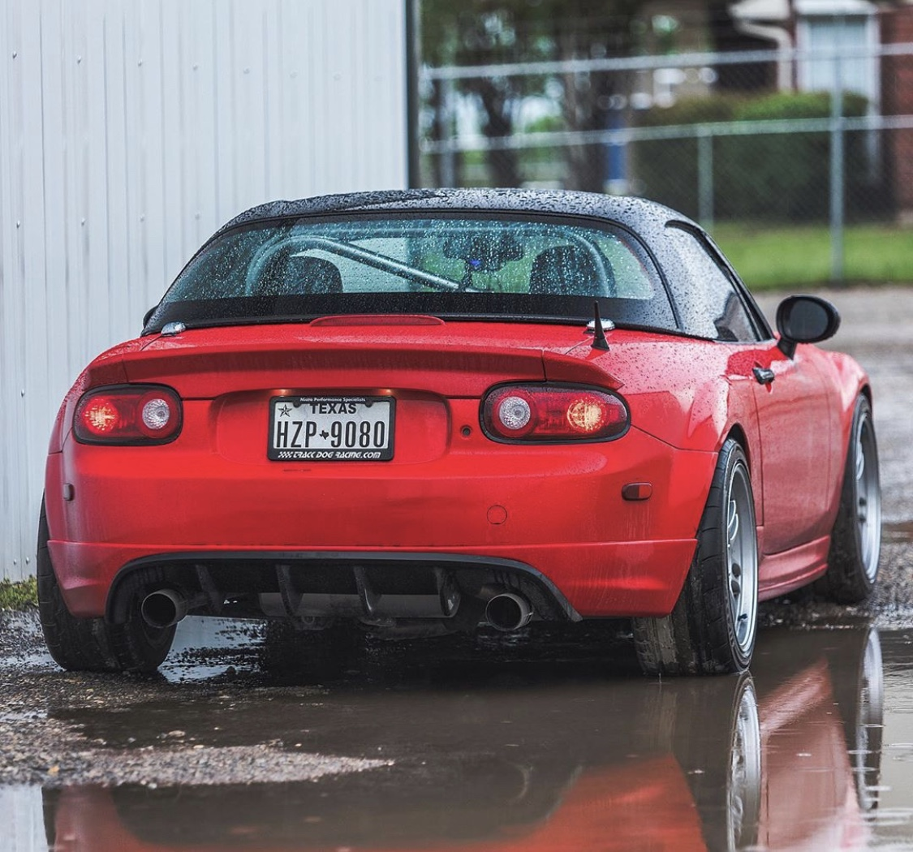

| Miata Generation | Code |
Photo (front) | Photo (back) | Conditon |
Price | Description |
| Miata NA | 07-DLG-95 |
| |
Great | $4,000 |
The Mazda Miata NA is the origin of where everything started. To the acronym M.I.A.T.A. meaning "Miata is always the answer" to the classic pop up headlights.
The engine has a 1.6 L that's compatible to it's 4 inline cylinder getting up to 116 horsepower at 6500 rpm. |
| Miata NB Coupe | 14-DLG-02 |
|
| Amazing | $6,500 |
The Miata NB is the next up in-line taking it to sport's like feel with the option of the basic model or the turbo special edition.
This time, the engine came with a 1.8 L and still keeping the 4 cyliner design as with the NA.
It gives off 140 horsepower at 6500 rpm and this time with a 5-speed transmission. |
| Miata NB Hatchback | 17-DLG-04 |
| |
good | $8,000 |
The hatchback NB is a more simplistic version of all of them. Its design is completely remodeled from the rear end in which gives it a new feel to the car and makes you stand out.
It keeps all of the traditions of the NB Coupe model without the more aggressive look behind it. |
| Miata NC | 20-DLG-09 |
|  |
Proper | $15,590 |
The NC, for many, can be considered the forgotten one. To begin with, the body-design of the car is more bubble-like in which case gives it a more cuter look to it.
The engine in this car is a different story, basing it off of a 2.0 L with a 4 cylinder design, many will think it gives more power.
That power was marked at the highest so far giving off 160 horsepower at 6700 rpm, this time with a 6-speed transmission. |
| Miata ND | 77-DLG-15 |
| |
Clean | $22,990 |
Last but never the least, the ND is an image-improvement from the NC dealing with a more aero-dynamic and super aggressive built.
Everything with this car is similar to the NC, but the look gives it a whole new different feeling behiind the wheel especially with the new and improve technology. |